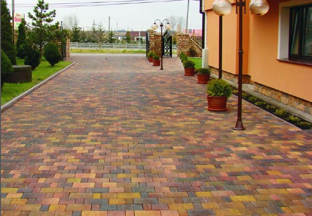

Jako dlažbu jsem si vybral polskou dalžbu Murabet Vzor Elegance Cypryjska - zlatý podzim.

Následuje krátký popis k nákresu
- napojení odtokových žlabů před vjezdem do garáže bude do stávajícího odvodu dešťovky - t-kus připraven v zemi
- lze napojit dlažbu způsobem, že bude obrubník výše než vrch dlažby
- sjezd z hlavní cesty je již včetně odtokových žlabů, které jsou napojeny do příkopu
- chodník - dlažba s výškou 6 cm bude od parkoviště oddělena obrubníkem
- parkoviště dlažba 6cm, podklad je v současností struska o výšce 10 - 20cm, uválcováno vibr. válcem cca 3t nutno vyspádovat a zajistit odtok dešťové vody - nejlépe do příkopu nějakou drenáží
- sjezd je nutno upravit zřejmě pomocí bednění (vytvořit obruby) a položit dlažbu zde použít část z "11"
- napojení chodníku k budovám
- při demontáži "11" odstranit obrubník
- výška dlažby u garáže musí respektovat výšku podlahy v garáži
Níže uvádím odkaz na fotky, které Vám jistě pomohou. Sledujte popisky u fotografií.
http://frajki.rajce.idnes.cz/Dlazba
V případě dotazů, nebo upřesnění mne kontaktujte.
S pozdravem Ladislav Frajkowski
mobil: 608 878 770, tel.: 596 324 040